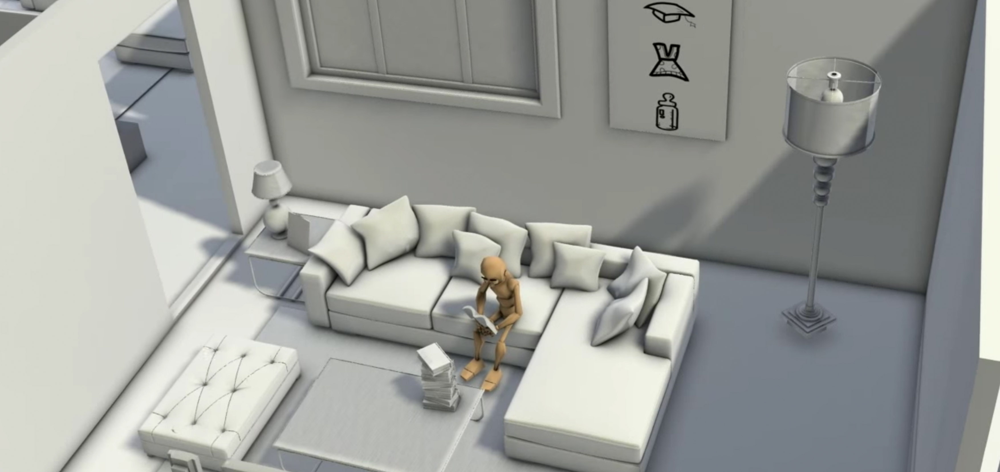
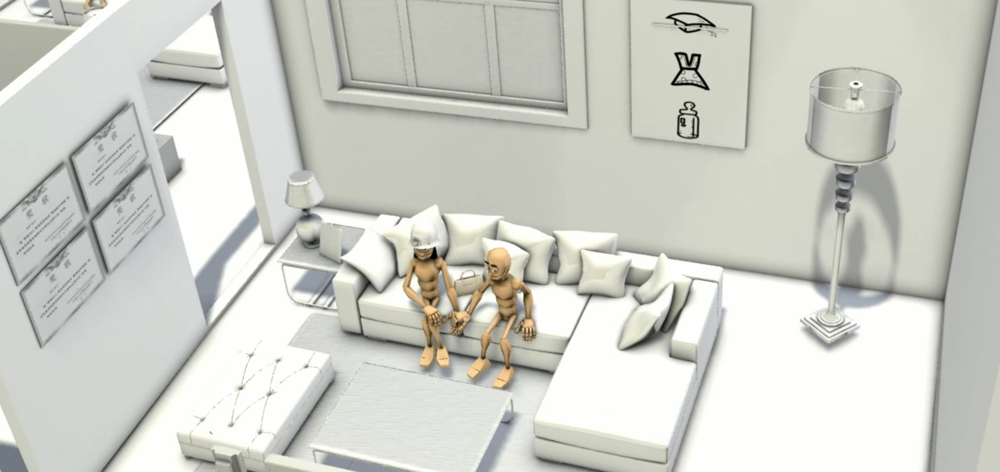
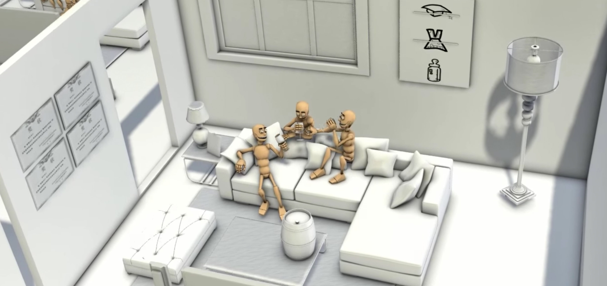
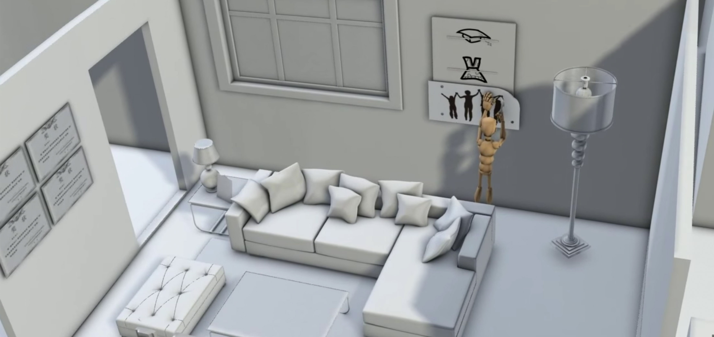

Looking Forward
3D modeling | Editing
Looking Forward is my capstone project during undergrad. Inspired by a set of current Chinese marriage conventions, I created this 3D animation to encourage people to be faithful to their life.
Where is the idea coming from?
In recent year, getting marriage is coming to be a social issue and getting harder increasingly due to the living pressure. There are certain amount of females who insist to marry those with better financial status. Because of this, males, sometimes people call them loser, have to break up with their girlfriends and therefore lose faith in love and even life. In this sense, I would encourage them to be more active to their life by telling a story about a similar loser and showing how he got through the break-up, in order to educate them that there are more than love in their life.
What does the story look like?
There are three chapters in the story. Each chapter has a goal for the character to achieve which represents different stages in life. The first chapter is about education, where character got awards and degrees through hard working when he was around 20 years old. In this chapter, I chose books to be the representation of pursuing a degree.
In the second chapter, the goal is finding a girl and marrying her. Due to the lack of dating experience, he was rejected by a girl for the first time when he was trying to kiss her directly. He went back for dating instructions from books and sending a rose to the girl. This time he successfully made it.
The last chapter is kind of funny. The original goal is having a baby with the girl from the end of chapter two. However, when he told her about having ONE baby, the girl asked for THREE things, a house, a car, and a diamond ring, which is absolutely impossible for a young people like him. So they broke up. In the next following day, he felt heartbreaking and depressed. He thought he is a loser and girl is so harsh. The girl never showed up but his friends came to make him better. They brought beers, watched football games, held party at home. They did everything they could to make him happy. After friends left, he felt better and understood that friends is the ones who can be there whenever you need them. So he erased the third goal I set to him, and set friends as his third goal in his life.
The perspective of this project is from the sky, which is like seeing as God. I was trying to help every viewer dive deeply into it through this perspective as to say “Hey! You are controlling him, you are drawing his path.” And in the end of the story, by erasing the goal I set to him and making his own, I would like to depict a man who is finally able to find out who he is and what he is looking for.
How do I make it?
I created this project in 3D Max including 3D modeling, skeleton binding, animating and lighting. In addition, I used Autodesk combustion to merge the lighting layer and object layer together to finish the final version. The main technical difficulty for me is how to bind 3D objects with motion skeleton. This is the most tricky part because I have to decide which part of object to be tied to which part of skeleton in order to make the character move smoothly.
Afterwords
- Time is the No.1 thing. Good time management could be helpful with the entire progress.
- Camera movement in 3D Max is kind of tricky. Any change to previous location could affects the animation of the following one. The path and animation should be settled down before making animation.
- When binding model to skeleton, it should be very careful with the force range for joints.
- Thanks my advisor Haibo Wang for all kind of technical supports provided.